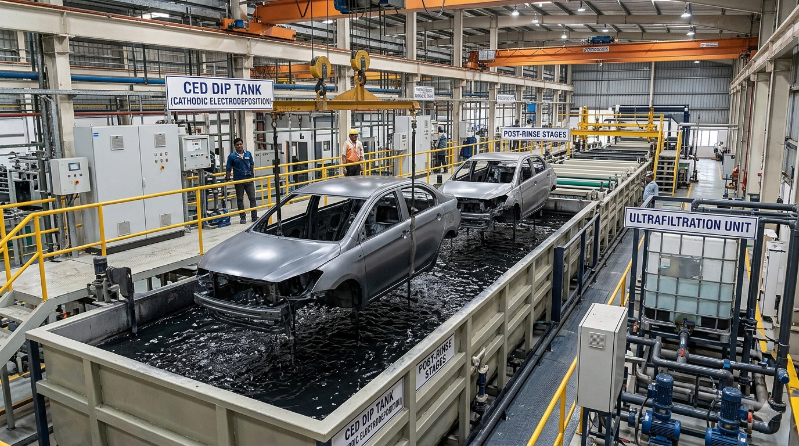
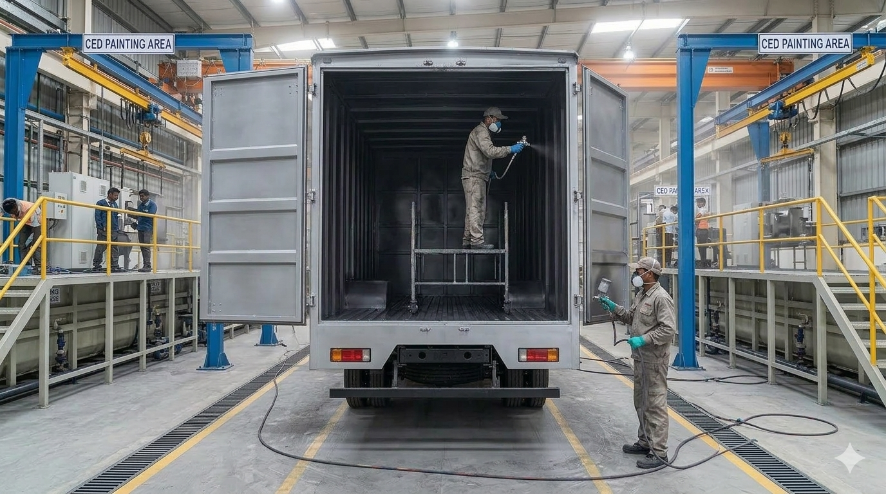
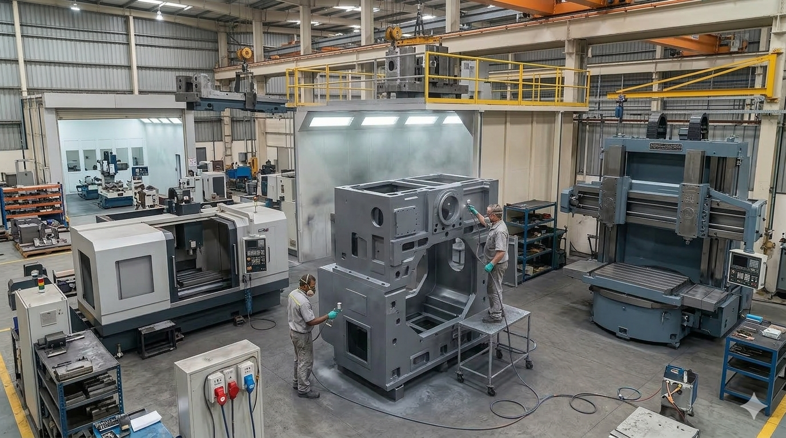
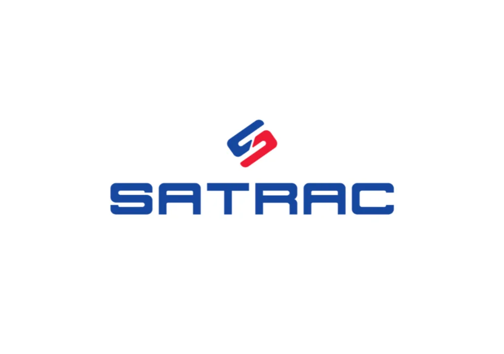
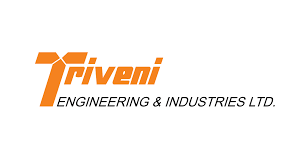
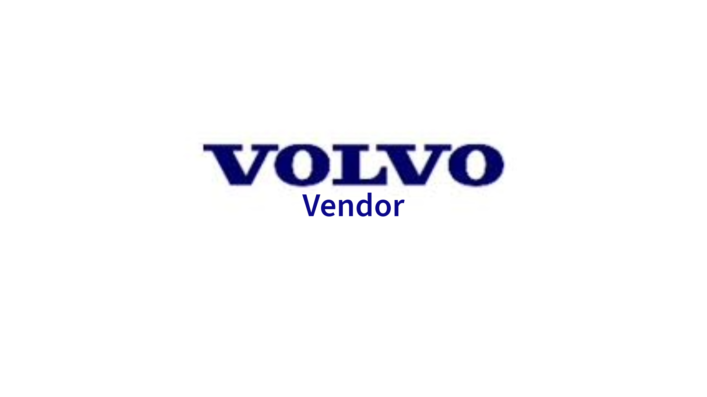

"A friend to conserve the environment"
Vara Water Borne Coatings (VWBC) is one of the pioneers of the innovative coating industry. Pursuing new vistas to develop green technologies for Engineering and OEM industry.
VWBC has vision to be a partner of EMS certified organisations to meet strict global environmental and legal compliance.

The indigenously developed CED formulation could help tier-2, tier-3 suppliers of automotive industry. Also helps in lowering plant installation costs.

Water Borne coatings lower costs and replace conventional coatings on non value added coating zones in truck industry.

Water borne coatings lower VOCs to great extent and helps OEMs to meet government driven regulations.
Trusted by leading manufacturers and industry partners


